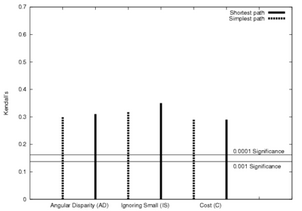

Scene modelling | Online model | Navigational strategies | Surveillance | Evaluation | Relevant publications | Links
This page describes work carried out by Hannah Dee and David Hogg into the use of intentionality within behaviour modelling. Inspired by work in the philosophy of mind on levels of explanation, and by work on human navigation within psychology, this work tries to incorporate high level psychological constructs into the problem of behaviour modelling in computer vision. When observing human behaviour, the questions we find ourselves asking are not to do with typicality of movement or statistical patterns of motion, but to do with the goals and intentions of the people moving around within the scene. In effect, we ask ourselves "Where are they going?". The sorts of answer that would satisfy these questions are attributions of motive or goal: "She's going towards that particular car". Such a goal attibution is a form of explanation (an intentional explanation), and will cause us to ignore the person in question, their behaviour having been explained away.
This work produced two systems which perform analysis of behaviour within a surveillance context taking advantage of this insight. These systems are the first that work at the psychological level of intentionality. The online system uses an ad-hoc model of goal-directed behaviour and recalculates possible intentions at each frame, whilst the other uses models of navigation from the psychological literature only calculating the possible intentions once. Both systems rely on the same scene model, detailling the location and extent of exits and obstacles. A novel protocol has also been developed for the evaluation of surveillance and event-detection systems, in which the performance of an algorithm is correlated against the performance of a group of humans performing the same task. Both of the systems are evaluated using this criteria and are shown to be in broad agreement with human judgements. Specific surveillance applications are discussed, which use the distance scores from the behaviour modelling output as an indication of "interestingness".
Before being able to determine the intentions or goals of the people moving around within a scene, we need to know certain things about that scene's geography: where the physical goals are actually located. Within the kinds of situation investigated in this work (pedestrian and car-park scenarios), goals are either cars, entrances/exits or doorways and are defined by their size and geographical location in space. In line with others in computer vision (e.g. McKenna and Nait-Charif '04, Stauffer '03, Makris and Ellis '02) exit locations for geographical goals were learned by fitting a Gaussian mixture model to the start and end points of trajectories. Those cars initially in the carpark had their location marked by hand, and other vehicles were located by assuming that the end of a car trajectory resulted in a car parking (unless that trajectory ended near one of the previously determined exits). The obstacle model was created by hand, and then converted into polygonal form by straight-line approximation.
| The car-park scene used as one of the test scenes | Entrances and exits learned for this scene | Obstacle model hand-crafted for this scene |
We also made use of the PETS2004 dataset, which provided ground truth in the form of x,y,t for a small number (n<30) of agents. Due to the small size of this dataset we were unable to use machine learning techniques for exit location and instead constructed the exit model by hand.
The first system developed using ideas of intentionality relied upon an algorithm that recalculated possible goals for each agent at each timestep. This implementation has since become called the online algorithm and is covered in more depth in our paper from BMVC 2004 "Detecting Inexplicable Behaviour" PDF link.
In the online implementation, the scene is divided into polygonal areas depending upon what we call sub-goals. In a scene without obstacles, it would be possible to determine the goal of an agent by simply noting what direction they were walking in. With obstacles, the situation is both more complicated and more interesting. The agent might have to first move away from their goal in order to circumvent some intervening obstacle. To account for this fact we introduce sub-goals. A sub-goal is an intermediate, virtual goal placed at a tangential vertex of an obstacle. These are places where, were the agent at that place, they would be able to see more of the scene than they currently can. To summarise:
Sub-goals are recorded along with their "level" - the sub-goals visible from the agent's current location are level one sub-goals, those visible from level one sub-goals are called level two sub-goals, and so on. The illustration below shows a sample (fictitious) scene with sub-goals shown as green circles and three levels of sub-goal analysis (S0, S1, and S2).
| Goal | Sub-goal | |||
| Agent | Obstacle | ||
| Direct path headed towards (S0) | Accessible via one sub-goal (S1) | |||
| Accessible via two sub-goals (S2) | Direct path but headed away (D) | |||
| Not visible at all (N) |
We now have agent-centered "maps" for each agent for each frame, and as the agent moves through this scene (presumably towards their final goal) the pattern of activity at each goal location changes. If the agent heads in a straightforward, goal-directed fashion towards their final goal we can assume that whatever state it starts out in (S3, for example), as the agent moves towards that goal it will progress through levels of sub-goal which get lower and lower, finishing with the agent heading directly towards the goal (it will be in state S0). We use a finite state automata to capture this pattern of goal activation, and associate costs with those goal transitions associated with motion away from a goal. In this way we can convert a pattern of goal activations to an "intentionality score" or cost for each goal within the scene. We assume that the lowest cost goal is the agent's final goal, and use this to represent the entire trajectory. The finite state automata is shown below.
A movie showing this system in action in the car-park scene, and illustrating how the pattern of active goals changes over time as the agent moves through the scene is available here: 24MB AVI file. In this movie, areas accessible by progressively higher levels of sub-goal are shown in progressively darker shades of grey.
The second investigation into intentionality within computer vision involves the use of psychologically inspired models of human navigation to work out where the agents in the scene might be going. The two models investigated so far are shortest path and simplest path. The shortest path model of navigation predicts that people will take the geographically shortest route from their current location to their goal, and the simplest path model predicts that they will take the path made up of the smallest number of straight line segments. We presented this work at the workshop Visual Surveillance 2006 under the title "Navigational Strategies and Surveillance PDF link.
The algorithm can be summarised as follows:
Each of these steps is dealt with in more detail below.
1: Work out all possible paths to the goals in the scene from the agent's current location (according to either the shortest path or the simplest path model). This is done in a similar way to the sub-goal calculation in the online algorithm. The images below show all paths for a sample agent.
| All shortest paths for Agent 22, car-park dataset. This can be thought of as a tree of possible future routes through the scene. Note that the "trunk" of the tree starts shortly after the agent's trajectory - this delay allows time for the Kalman filter's direction estimate to stabilise. | All simplest paths for the same agent. Some of the simplest paths are the same as the corresponding shortest paths. |
2: When the trajectory ends and the agent has left the scene, work out which of these paths is closest to the agent's trajectory according to the Monotonic Hausdorff Distance Hm. The Hausdorff distance between two sets of points is a means of determining how close in space two point sets are. However, we are dealing with trajectories and paths, which have a natural progression from point to point, so have developed a modification which respects this ordering. The images below show the difference in matched point selection between the two methods.
 |
|
| The selection of points to match in the Hausdorff distance. Note that when the trajectory of the agent "doubles back" on itself, close matches are chosen as the only criteria for selection is distance-based. | The selection of points in the monotonic Hausdorff distance, in which subsequent matched points have to be the same distance or farther from the start of the agent's trajectory. |
3:Having found the closest path in space, use measures based upon angular disparity to determine how closely the agent is following that path. Three angular distance measures have been developed so far. AD relies on angular disparity, IS on angular disparity but ignoring small numbers, and C is a measure that combines angular information with information about the relative lengths of trajectory segments.
| Trajectory and closest ideal path for Agent 44. The trajectory is in black. The ideal path is dark grey (with obstacles in light grey) and the subgoals on the ideal path are shown as black dots. | Corresponding angular disparity graph. Comparing this graph to the image above left, segment 1, shown in the graph in red, corresponds to the first part of the ideal path (from the yellow mark to the top of the central obstacle). Segments 2 and 3 are along the top edge of the central obstacle, and segment 4 is the long segment leading out to the bottom left of the carpark. From the angular disparity graph it is clear that the agent's trajectory is closer in angle to each of these segments in turn. |
The paths generated using these methods, and the scores allocated to them, seem to agree with our subjective judgements of the routes people are likely to take and seem also to provide some measure of how closely the supposed routes are being followed. However a more robust form of evaluation is required for us to be certain of this. To this end we have introduced a novel approach to the evaluation of behaviour modelling systems, based upon a result from Troscianko et al 2004 (What happens next? The predictability of natural behaviour viewed through CCTV cameras. Perception 33, 87-101, available in PDF from the University of Bristol). In that paper, Troscianko et al show that when it comes to judging what happens in CCTV footage, naïve subjects perform just as well if not better than trained CCTV operatives. As our algorithms perform a similar job - determining how goal-directed a person's activity is - we use a group of naïve observers to provide a benchmark against which we can measure the software performance. This is a kind of ground truth for interestingness. The work described in this section is covered in more depth in our PETS 2004 paper "Is it Interesting?: Comparing human and machine judgements on the PETS dataset" PDF link.
To obtain this ground truth we show video clips of each agent to a number of volunteers, and get them to rate on a scale of 1 to 5 how interesting that behaviour pattern would be to a security guard. The resulting ranks can then be used with non-parametric correlation statistics such as Kendall's Tau or Spearman's Rho to determine how our software scores of intentionality compare to the human judgements of interestingness. In all cases, the correlations are very strong (greater than 0.5%). The images below show the correlations (click for larger versions).
|  | |
| Correlations between the various angular distance based metrics and the mean human ranking for the car-park dataset. | Same correlations for the PETS dataset. The PETS dataset has lower levels of correlation than the car-park dataset, but the results are still highly significant (0.5%). |
The strengths of these resulting correlations tell us some interesting things. The online algorithm and navigational strategies algorithm perform comparably. Within the navigational strategies framework, the IS distance measure agreed most strongly with the human volunteers. The "shortest path" planning strategy consistently performed as well as or better than "simplest path", which may provide evidence that this strategy is preferred, as psychologists suggest. Whether the techniques described here could be a new means for carrying out naturalistic experiments into human path planning strategies is a matter for future resesarch.
Some preliminary experiments have been carried out with thresholding on the online algorithm scores to detect particular events. These are presented in the AVSS-2005 paper PDF link.
There are a number of conference papers on this work:
A journal paper is in preparation, and there is also a thesis:
{kind=link}
{kind=link}